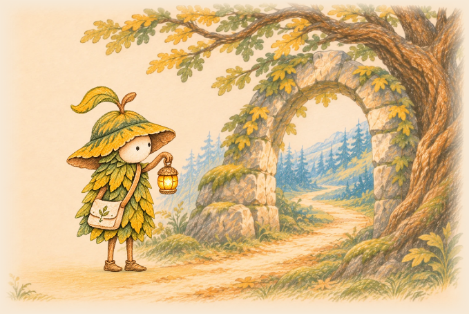
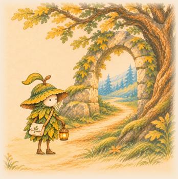
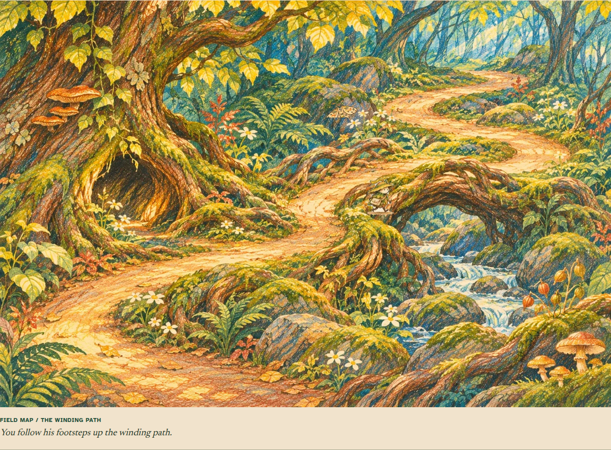
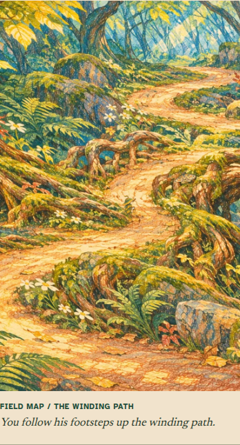
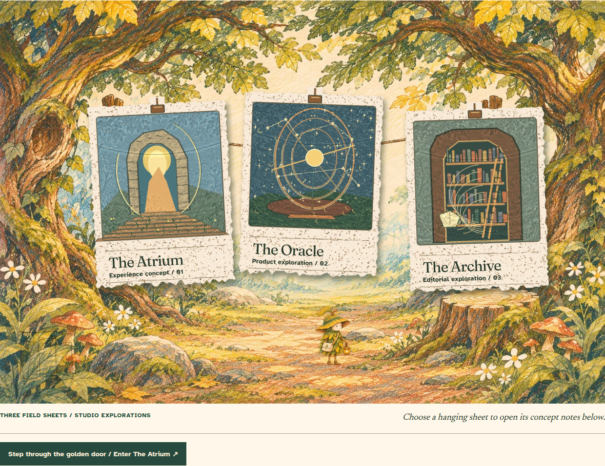
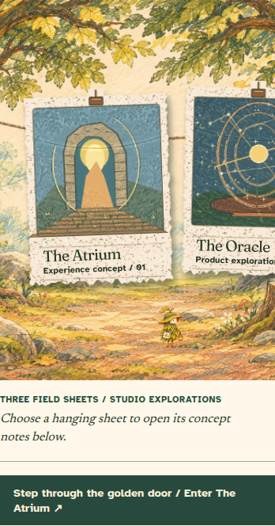
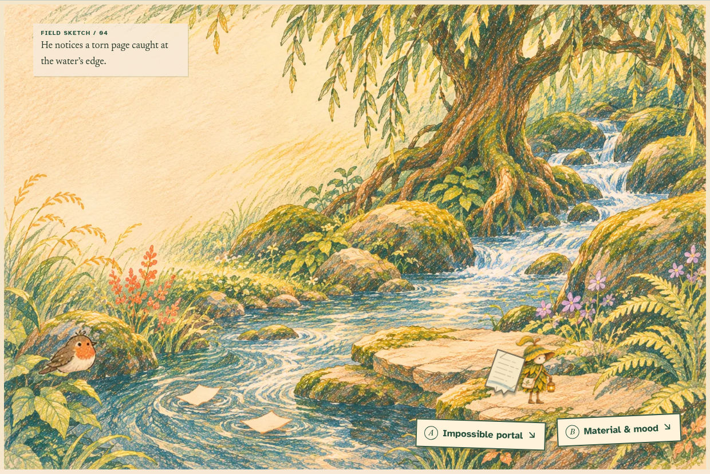
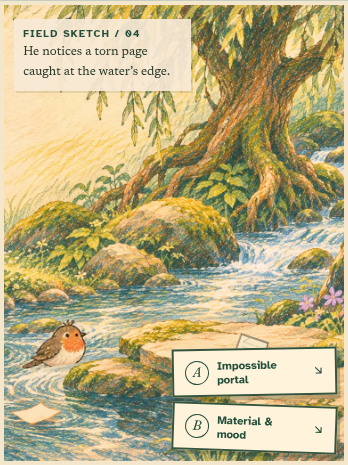
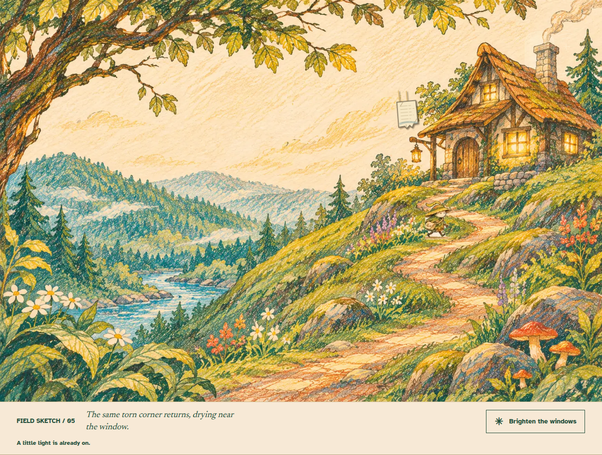
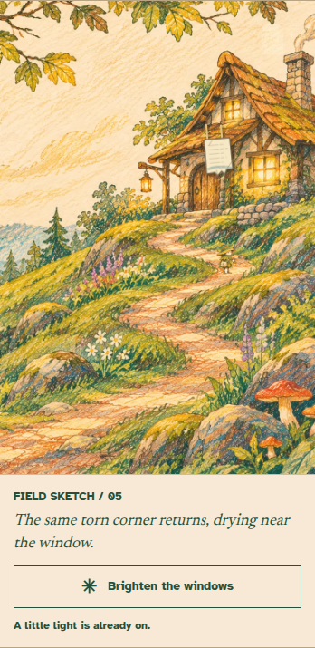

Five places.
Ten frames.
A contact sheet of ten real, frozen Chromium production renders. Study silhouette, groundline and atmospheric pacing across desktop and portrait.
Entrance
Narrow moss arch / morning aperture


Golden-green morning opening between cooler trunks. Keep heading and CTA outside the illustration; reserve opening around arch.
Winding Path
Crossing diagonal roots / serpentine path


Alternating diagonal lit trail and shaded roots. Path-trace control stays clear of walker and route apex.
Work Clearing
Wide foliage opening / suspended paper folios


Quiet woodland so the Atrium golden portal leads the eye. Visible Atrium, adjacent poster edge, entry and folio labels.
River Stories
Cool meander / contrasting shores / close view


Cooler water against a pale torn-page silhouette. Move note buttons beneath portrait frame, never over Paperkeeper.
House on the Hill
Small cottage / gold window against hillside


Cooler late-evening landscape while existing window light stays warm. Window and torn page stay away from house light toggle and Field Letter.